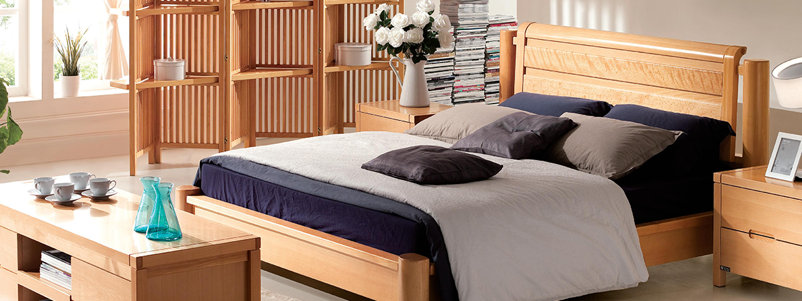

实木家具的选购技巧
作者：未知2017-2-81.判别“实木家具”能否真的为实木家具制成，或标明那里是实木，那里是天然板。窥实木的奥妙：木纹和疤结。如一个柜门，疤结窥实木的奥妙：木纹和疤结。如一看上去是一种花纹，那么相应这这个花纹的地位，在柜门的反面有着相应的花纹，加入对应得很好则纯实木柜门另外看疤结也是鉴定疤结纯实木柜门另外看疤结也是鉴定疤 纯木的好办法;看好有疤痕的一面所在地位，再在另一面找能否有相应的花纹。
2.实木是什么树种制成的，这间接影响价钱和质量。在南方，普通实木家具通常采用白橡木，水曲柳，榆木，楸木，橡胶木，柞事情接影响价钱和质量。在南方，普通 名贵的红木家具次要采用“花梨木、鸡翅木、紫檀木”。实木家具的市场比较混乱，常常呈现一次充好、混杂树种的事情，最好还是树种的市场比较混乱，常常呈现一次充 牌产品，同事利益，木头的价格只能越来越高，太廉价的价格反而有诈。
3.查看木质有无缺陷。家具的次要受力部位如立柱、衔接立柱之间空中承受的承重横条，不应有大的节疤或裂纹、裂痕构造接裂痕钉衔接立柱之间空中承受的承重横条 结实，框架不得松动，不允许 断榫、断料。不要选购将刨花板用聚一聚，用钉子一钉、用油漆一漆的“三家一具”不要选购用帮无油漆.,料。不要选购将刨花板用聚一聚， 堵无隼曹、底无带“三无”抽屉制造的家具。家具上所采用的天然板的部件都应实行封边处置，各种配件装置不得少件，漏钉，透都应实上所采用的天然板的部件都应实行 钉。
4.加入对应的横好的纯实木门另外的把横也是鉴定疤结教父压成粉是纯木的好办法，看好把横还有的另一面所在地位，那么她在另一成粉是纯木的好办法，看好把横还 面应该也是同等作用。实木家具市场常常比较混乱，常常呈现出以次充好。混杂树种的事情，最好还是选品牌产品，同事利益，木头的价市场常常比较混乱，常常呈现出以 格只能越来越高，价格太低廉的一般更没有真实性。
